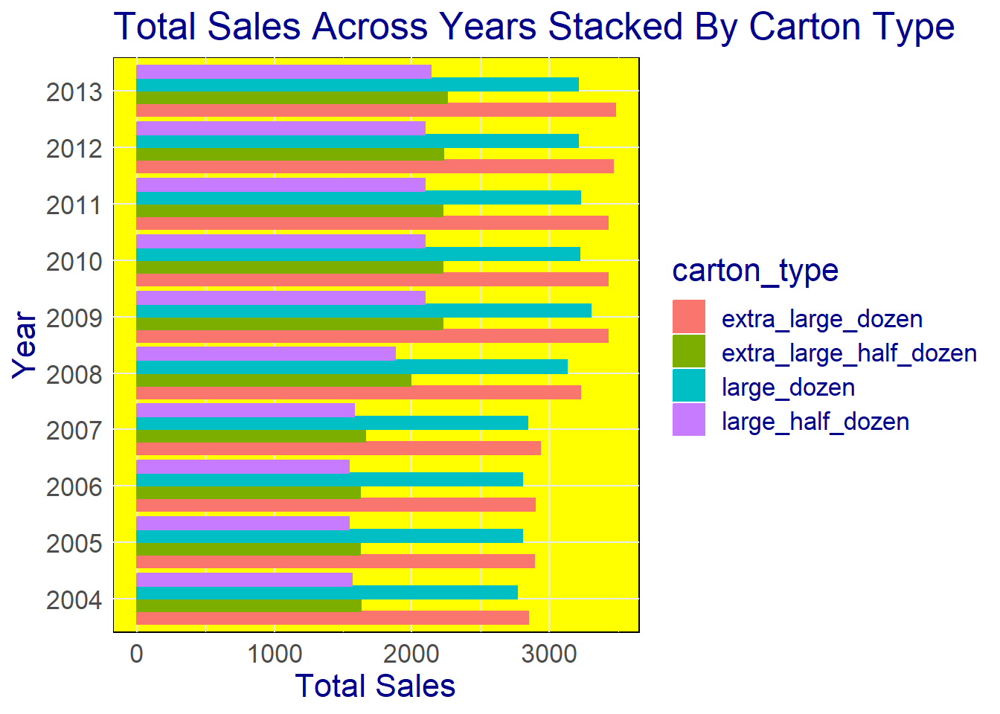

library(tidyverse)
library(ggplot2)
knitr::opts_chunk$set(echo = TRUE, warning=FALSE, message=FALSE)Challenge 7 Instructions
challenge_7
hotel_bookings
australian_marriage
air_bnb
eggs
abc_poll
faostat
usa_households
Visualizing Multiple Dimensions
Challenge Overview
Today’s challenge is to:
- read in a data set, and describe the data set using both words and any supporting information (e.g., tables, etc)
- tidy data (as needed, including sanity checks)
- mutate variables as needed (including sanity checks)
- Recreate at least two graphs from previous exercises, but introduce at least one additional dimension that you omitted before using ggplot functionality (color, shape, line, facet, etc) The goal is not to create unneeded chart ink (Tufte), but to concisely capture variation in additional dimensions that were collapsed in your earlier 2 or 3 dimensional graphs.
- Explain why you choose the specific graph type
- If you haven’t tried in previous weeks, work this week to make your graphs “publication” ready with titles, captions, and pretty axis labels and other viewer-friendly features
R Graph Gallery is a good starting point for thinking about what information is conveyed in standard graph types, and includes example R code. And anyone not familiar with Edward Tufte should check out his fantastic books and courses on data visualizaton.
(be sure to only include the category tags for the data you use!)
Read in data
Read in one (or more) of the following datasets, using the correct R package and command.
- eggs ⭐
- abc_poll ⭐⭐
- australian_marriage ⭐⭐
- hotel_bookings ⭐⭐⭐
- air_bnb ⭐⭐⭐
- us_hh ⭐⭐⭐⭐
- faostat ⭐⭐⭐⭐⭐
Eggs data set- (eggs_tidy.csv)
eggs <- read_csv("_data/eggs_tidy.csv")
head(eggs)# A tibble: 6 × 6
month year large_half_dozen large_dozen extra_large_half_dozen extra_lar…¹
<chr> <dbl> <dbl> <dbl> <dbl> <dbl>
1 January 2004 126 230 132 230
2 February 2004 128. 226. 134. 230
3 March 2004 131 225 137 230
4 April 2004 131 225 137 234.
5 May 2004 131 225 137 236
6 June 2004 134. 231. 137 241
# … with abbreviated variable name ¹extra_large_dozenBriefly describe the data
Tidy Data (as needed)
Is your data already tidy, or is there work to be done? Be sure to anticipate your end result to provide a sanity check, and document your work here.
column = names(eggs)
column <- column[!column %in% c("year","month")]
column[1] "large_half_dozen" "large_dozen" "extra_large_half_dozen"
[4] "extra_large_dozen" Here, names() function returns the names of the columns in a data frame. The %in% operator is used to test whether the elements of the column vector are contained in the c(“year”,“month”) vector, which is a vector of character strings containing the values year and month. So the column vector will only contain the names of columns that are not year or month.
To find the total sales for each year, we can group the data by year and use a summary function to calculate the total sales for each group.
eggs <- eggs %>%
pivot_longer(eggs, cols=column, names_to = "carton_type", values_to = "sales")
head(eggs)# A tibble: 6 × 4
month year carton_type sales
<chr> <dbl> <chr> <dbl>
1 January 2004 large_half_dozen 126
2 January 2004 large_dozen 230
3 January 2004 extra_large_half_dozen 132
4 January 2004 extra_large_dozen 230
5 February 2004 large_half_dozen 128.
6 February 2004 large_dozen 226.Visualization with Multiple Dimensions
group <- eggs %>%
group_by(year) %>%
summarise(
sum = sum(sales)
)
group# A tibble: 10 × 2
year sum
<dbl> <dbl>
1 2004 8805.
2 2005 8862
3 2006 8867.
4 2007 9018.
5 2008 10226
6 2009 11046
7 2010 10968.
8 2011 10974.
9 2012 10997.
10 2013 11084.In this eggs dataset is first grouped by the year column using the group_by() function then for each group a new column named sum is created that contains the sum of the sales column for that group. The resulting dataset is saved in the group variable then we used summarise() function.
I restructured the data so that each row represents a month, year, egg carton type, and the corresponding sales of that type of carton. This new format will make it easier to conduct further analysis and group the data.
Let’s create a simple line graph showing the sales made over the years-
# create a line plot of the sum column against the year column
ggplot(group, aes(x = year, y = sum)) +
geom_line(color = "red") + # set the line color to red
theme_minimal() + # use the minimal theme for the plot
theme(
plot.background = element_rect(fill = "lightblue"), # set the background color to light blue
panel.grid = element_line(color = "grey") # set the grid lines to grey
)
To get the total sales, group the data by year and carton type-
group_by_y <- eggs %>%
group_by(year, carton_type) %>%
summarise(
sum = sum(sales)
)
group_by_y# A tibble: 40 × 3
# Groups: year [10]
year carton_type sum
<dbl> <chr> <dbl>
1 2004 extra_large_dozen 2848.
2 2004 extra_large_half_dozen 1631.
3 2004 large_dozen 2764.
4 2004 large_half_dozen 1563.
5 2005 extra_large_dozen 2892
6 2005 extra_large_half_dozen 1626
7 2005 large_dozen 2802
8 2005 large_half_dozen 1542
9 2006 extra_large_dozen 2897.
10 2006 extra_large_half_dozen 1626
# … with 30 more rowsggplot(group_by_y, aes(x=year, y=sum, fill=carton_type)) +
geom_col(color="black", size=0.5) +
theme(text = element_text(family="Courier")) +
geom_vline(xintercept=c(2010, 2015, 2020), color="red", linetype="dashed", size=1) +
scale_fill_brewer(type="seq", palette="Blues")
Now we will create a graph showing the data grouped by year and carton type, with the total sales-
# Here we create a new plot with the group_by_y dataframe as the data source
ggplot(data=group_by_y, aes(x=year, y=sum, color= carton_type)) +
geom_line() +
geom_point() +
# Add labels for the x-axis, y-axis, and plot title
labs(
x = "Year",
y = "Total Sales",
color = "Carton Type",
title = "Total Sales By Carton Type Across Years"
) +
guides(color = guide_legend(title="Carton Type")) +
# Use the theme_minimal function to create a minimal theme
theme_minimal() +
theme(
text = element_text(family="Arial", size=16, color="darkblue"), # Set font, size, and color of text
panel.background = element_rect(fill="lightblue") # Set fill color of background
)
To create a horizontal stacked bar chart and convert the year variable to a categorical type we will,
# we will create a new dataframe with the year column as a character
catyear <- group_by_y %>%
mutate(year=as.character(year))
# now we create a new plot with the catyear dataframe as the data source
ggplot(catyear, aes(x = sum, y = year)) +
# then add a stacked bar chart to the plot
geom_bar(
aes(color = carton_type, fill = carton_type), # Color and fill bars based on carton_type
stat = "identity", # Set the statistic to identity to create a stacked bar chart
position = "dodge" # Set the position to dodge to stack the bars
) +
# Add labels for the x-axis, y-axis, and plot title
labs(
x = "Total Sales",
y = "Year",
title = "Total Sales Across Years Stacked By Carton Type"
) +
# Use the theme_minimal function to create a minimal theme with no background annotations or grid lines
theme_minimal() +
# Use the theme function to customize the font, size, and color of the text in the plot, and the background color
theme(
text = element_text(family="Arial", size=16, color="darkblue"), # Set font, size, and color of text
panel.background = element_rect(fill="yellow") # Set fill color of background
)
ggplot(data = catyear, mapping = aes(x=year, y=sum, fill = year)) +
geom_bar(stat = "identity", position = "stack") +
labs(
x = "Year",
y = "Sale",
fill = "Year",
title = "Total egg sale by Year"
) +
theme(
plot.background = element_rect(fill = "lightblue"),
panel.border = element_rect(color = "black", fill = NA, size = 2)
)
ggplot(data = catyear, mapping = aes(x=carton_type, y=sum, fill = year)) +
geom_bar(stat = "identity", position = "stack") +
labs(
x = "egg and carton size",
y = "sale",
fill = "Year",
title = "Total egg sales by category and month"
)+
theme(
plot.background = element_rect(fill = "lightblue"),
panel.border = element_rect(color = "black", fill = NA, size = 1),
text = element_text(family = "Arial")
)